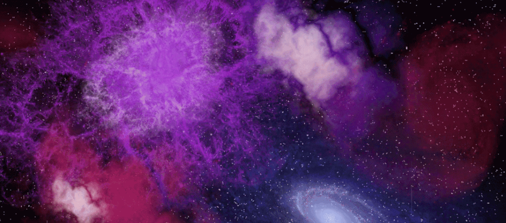

-
The Birth of a Star
What makes up a star?
-
Just Some Gases
Gaseous clouds and dust particles float around in the galaxy. A disturbance, such as a comet or a supernova far, far away, causes movement and pressure change around the gas clouds.
-
A Big Disturbance
The disturbance in the clouds causes the gases to draw inwards and form clumps. The clumps start to collapse under their own gravitational pull.

-
Hot Balls of Fire!
The collapsing clumps of gases start rotating and heating up. They flatten into a disc shape while rotating.
-
Hello, Protostar
The rotating disc spins faster and faster, pulling in other materials from the galaxy around it. The center of the rotating clump becomes a hot core, called a protostar. Materials around the star that don't stick to the core can become other stars, planets or comets.
-
Protostar Gets Hotter
The protostar continues to heat up and rotate. Helium and energy are produced by fusing hydrogen atoms in the hot temperature.
-
The Final Blast
Millions of years pass, and the hot core blasts away particles and dust around it, forming a star.
-
All information from: http://science.nasa.gov/astrophysics/focus-areas/how-do-stars-form-and-evolve/